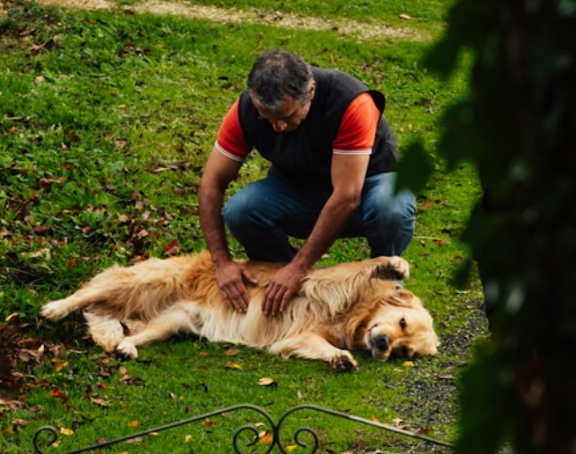

About PatiPop
Connecting Hearts Since 2020
Bringing people and pets together through trust, care, and a shared love for animals, while supporting responsible adoption and lifelong companionship.

Healthy Paws from Trusted Care
We support animal health and well-being through reliable guidance, responsible care, and a deep commitment to every pet’s happiness.
PatiPop Articles
Explore our latest articles on pet care, adoption, and healthy living, created to guide you with trusted and thoughtful content.
Browse All ArticlesFAQs
Find quick answers to common questions about Patipop, including donations, adoption, and how you can help animals in need.
Patipop is a platform dedicated to helping stray animals. It brings together food donations, adoption listings, and volunteer support to improve the lives of animals in need.
You can make food and care donations through our website using secure payment methods. All donations are delivered to partner shelters.
Yes. Patipop works only with trusted shelters and volunteers. All donation processes are handled transparently.
You can browse adoption listings and apply by filling out the adoption form. After that, you will be contacted by the responsible volunteer.
No. Pet adoption is completely free. Our goal is to help animals find safe and loving homes.
You can join the Patipop team by filling out the volunteer application form. Volunteers support food distribution, care, and adoption processes.
Patipop operates across Turkey. You can view active shelters and volunteers in your city.
You can quickly report an emergency by submitting the report form with location details and photos.
Yes. You will receive updates about your donation via email or in-platform notifications.
Yes. Using Patipop is completely free. The platform exists to support animals, not to generate profit.